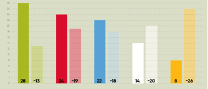

Ons team
Leden projectteam
Kijk gerust op de Portfoliopagina's van Marc Franken en Niek Boesveld!

Ons projectteam bestaat uit drie personen: Marc Franken, Niek Boesveld, en Dirk Sanders. Samen gaan wij werken aan een project binnen Flynth adviseurs & accountants. Gedurende de periode hebben wij ons verdiept in teamrollen en hebben wij vervolgens geanalyseerd hoe deze rolverdeling in de praktijk zich vertaalde. In dit document is eerst de Twynstra Gudde te vinden met daarna hoe wij de rolverdeling hebben geregeld gedurende het project. Vervolgens geven wij ieder een reflectie over de genoemde theorie en hoe het volgens ieder van ons in de praktijk is gegaan.
Kleurentest Twynstra Gudde
Om te kijken hoe ieder van ons tegen veranderingen aan kijkt heeft ieder de kleurentest van Twynstra Gudde gemaakt. Deze kleurentest geeft weer hoe jij als persoon tegen verandering aan kijkt. Hieronder vindt u de uitslagen van de kleurentest van ons projectteam.
Kleurentest MarcMarc is echt een blauwe veranderaar volgens onderstaande grafiek. Als blauwe veranderaar ben je geneigd om veranderingen rationeel te bekijken, te ontwerpen en te realiseren. Je onderzoekt alles om het beste resultaat te krijgen en maakt graag hierbij gebruik van experts. Als een blauwe veranderaar denk je analytisch en ben je transparant en navolgbaar.

Kleurentest Niek
Niek is volgens onderstaande grafiek een groene veranderaar. Een groene veranderaar vindt dat veranderen en leren aan elkaar zijn verbonden. Je gelooft dat als er een verandering plaatsvindt binnen een organisatie dat mensen zich hierdoor gaan ontwikkelen. Als groene veranderaar ben je ervan overtuigd dat tijdens een veranderproces er geëxperimenteerd, er pilots worden gedaan en ontdekt men, al gaandeweg, wat werkt. Je streeft naar een lerende organisatie en zelf faciliteer en ondersteun je mensen binnen een proces.
Kleurentest Dirk
Volgens onderstaande grafiek is Dirk een rode veranderaar. Bij een rode veranderaar draait alles om motivatie. De rode veranderaar is zorgvuldig, gevoelig voor sfeer en houdt van mensen. Organisaties bestaan uit mensen: hun gedrag, talenten en ambities. Hierop kan je sturen door mensen te motiveren. Als rode veranderaar kijk je naar de relatie tussen mens en organisatie hoe beide er beter op kunnen worden.

Conclusie
Bij ons projectteam is ieder een ander soort veranderaar. Tijdens het project dat wij bij Flynth uitvoerde kwam dit naar voren. Doordat ieder van ons een ander soort veranderaar is kijkt ieder ook anders naar onderwerpen toe. Uiteindelijk heeft dit niet geleid naar conflicten, maar heeft dit juist ons versterkt als projectteam.
Rolverdeling
We zijn als projectteam overeengekomen dat wij geen rolverdeling hanteren bij ons project bij Flynth. Iedere persoon binnen ons team is gelijk. Tijdens dit project werken wij voornamelijk samen, iedere stap die wij nemen wordt in gezamenlijk overleg gemaakt. Individueel aan het project werken gaat ook niet, omdat wij niet met meerdere personen tegelijkertijd het dashboard aan kunnen passen.
Samenwerken
Wij hebben ervoor gekozen om geen samenwerkingsvorm te hanteren. Echter hebben wij wel een aantal aspecten die belangrijk zijn als je goed wilt samenwerken.
1. DoelgerichtheidDoelgerichtheid is het helder krijgen van de doelen die je gezamenlijk hebt. Dit betreft niet alleen onze doelen, maar ook de doelen van onze opdrachtgever Flynth. Tussen deze doelen dient een samenhang te komen. Doordat er goede doelen worden opgesteld worden de prioriteiten en beslissingen beter begrepen.Wij hebben ervoor gekozen om korte sprints te houden en elke keer nieuwe doelstellingen op te stellen. Samen met de opdrachtgever hebben we deze doelstelling opgesteld. Vervolgens zijn wij gaan werken aan de opgestelde doelstellingen en hebben wij steeds teruggekoppeld aan de opdrachtgever waar wij tegenaan liepen.
2. Continu lerend vermogenVoor dit onderwerp proberen wij als groep elkaar te motiveren om out-of-the-box te denken. Soms kom er even niet uit dan is het belangrijk om elkaar te motiveren. Het voordeel van een projectteam met verschillende achtergronden is dat wij van elkaar konden leren. Dirk studeert ICT en kon Marc en Niek veel leren over zijn vakgebied. Dit geldt ook voor Marc en Niek zij hebben Dirk veel kunnen leren over het financiële vlak. Zodoende heeft iedereen veel van elkaar kunnen leren tijdens deze opdracht.
3. Vertrouwen en wederzijds respectHet is belangrijk om elkaars vertrouwen en wederzijds respect te hebben. Wij luisteren naar ieders idee en minder na wie welk idee heeft bedacht. Tijdens de opdracht hebben wij veel samengewerkt aan het dashboard. Iedere lid van het projectteam heeft evenveel input geleverd. Vertrouwen en wederzijds respect was er ook naar elkaar toe.
4. Effectieve werkprocedures en afsprakenWij hebben gekeken naar wat voor ons een fijne werkwijze was. En hierop hebben wij een planning en afspraken gemaakt. De werkwijze die wij hebben gebruikt heeft geleid tot een efficiënte en effectieve acties. Wij hebben in verschillende sessies gewerkt, iedere sessie begonnen we met wat we die dag wilde maken en of er nog afspraken waren waar wij rekening mee moesten houden. Vervolgens gingen wij aan de slag, met de doelstelling die wij voor de sessie hadden opgesteld. Vaak kwamen wij erachter dat we data nog nodig hadden hiervoor diende we naar onze opdrachtgever te stappen. De contact met de opdrachtgever verliep goed. We werkte nouw samen met de opdrachtgever, hierdoor was het belangrijk om goede afspraken te maken. De gemaakte afspraken zijn wederzijds nagekomen.
5. Gebruik maken van elkaars sterktenOns team is redelijk verschillend iedere individu heeft andere vaardigheden, kennisniveau en persoonlijke sterke punten. Het was vooral fijn dat niet ieder individu dezelfde opleiding volgt. Zoals eerder besproken hebben wij daardoor veel van elkaar geleerd. We hebben niet gewerkt dat ieder persoon het gedeelte deed waar hij goed in is, maar juist gewisseld zodat iedereen veel kon leren.
6. Flexibiliteit en aanpassingsvermogenTijdens dit project zijn wij vrij flexibel geweest omdat wij veel samen met de opdrachtgever werkten. De opdrachtgever heeft bepaalde ideeën, waardoor wij flexibel moeten zijn tijdens het maken van het dashboard. Er waren tijdens dit project verschillende belanghebbende. Hier moesten wij rekening mee houden. Wij hebben het dashboard zo gemaakt dat de belangrijkste punten van de belanghebbende erin zijn verwerkt.
7. Open communicatieIedere individu kon open communiceren tegen elkaar. Niemand veroordeelde elkaar over opmerkingen en ideeën. Want iedereen behandelde elkaar gelijkwaardig. Ook naar de opdrachtgever konden wij informeel communiceren, dit hebben wij als prettig ondervonden.
8. Gedeeld leiderschapZoals er eerder al gezegd is behandelen we elkaar gelijkwaardig. Er was geen leider in de groep, hier hebben wij voor gekozen omdat wij juist naar alle ideeën van iedereen wilde luisteren. Beslissingen werden tijdens dit project ook samen gemaakt.
Reflectie op de werksfeer
Dit gedeelte gaat om een persoonlijke reflectie op de werksfeer. Hoe Niek en Marc het hebben ervaren is terug te vinden op hun website.